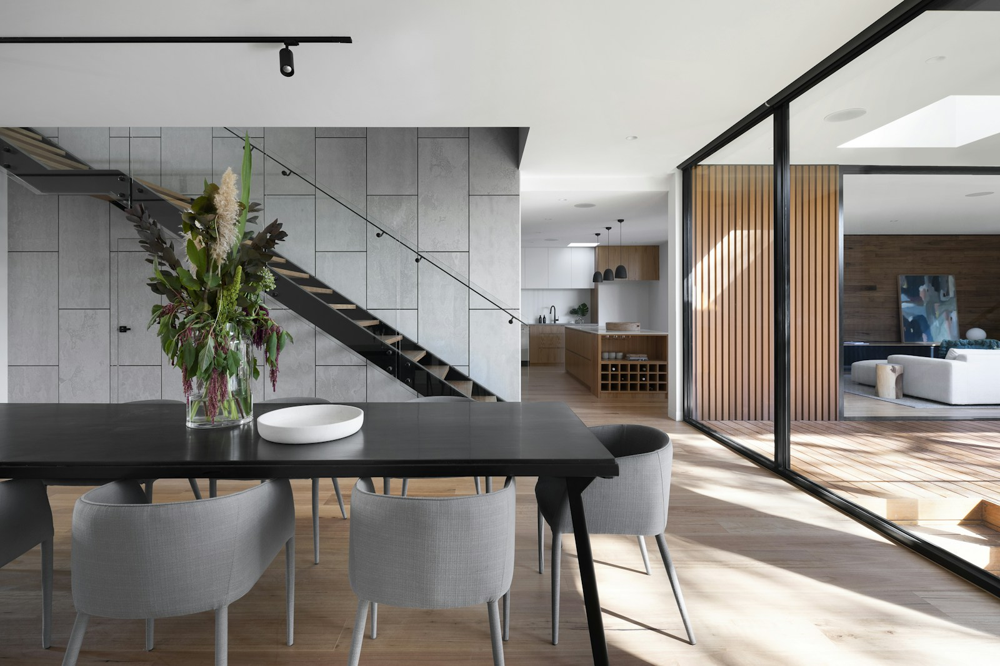

YOUR NEXT CHAPTER, WITH US.
住まいと、
この街の、
その先へ。
買うときも、売るときも、受け継ぐときも。
不動産の選択に、あなたの想いを。
HIGASHIOSAKA, OSAKA

A place to call yours.暮らしが変わる、出会いがある。
住空間のイメージ写真REAL ESTATE & LIVING
FIND YOUR PLACE
暮らしのイメージから、
住まいを探す。
家族の時間、仕事へのアクセス、これからの暮らし。
あなたの大切にしたいことから探してみませんか。
すべて架空のサンプル物件です。実際の販売物件ではありません。掲載許可・募集状況を確認した物件へ、本番公開時に入れ替えます。
PROPERTY PORTALS
ポータルサイトも、住まい探しの入り口に。
SUUMO・アットホームの公式サイトからも物件を探せます。
SUUMO 公式サイト ↗at home 公式サイト ↗当社の掲載一覧へのリンクは、掲載契約確認後に設定します。
SELL WITH CONFIDENCE
大切な不動産に、
次の可能性を。
売却の理由も、希望の時期も、一人ひとり違うから。
仲介と買取、それぞれの方法を一緒に考えます。

INHERIT THE MEMORIES
受け継いだのは、
不動産だけではないから。
実家をどうしよう。遠くにある土地をどうしよう。
まだ答えが出ていなくても、大丈夫です。
今の状況を整理し、これからの使い方を一緒に考えます。
ご相談の前に
まずは、分かることから。
- 01場所を確認する
住所や地番、固定資産税の通知など。
お手元にある情報を整理しましょう。 - 02名義と状況を確認する
相続登記や共有名義の状況を確認。
法的な手続きは専門家への相談も必要です。 - 03今後の希望を話す
売却・活用・保有。
ご家族の考えも含めてお聞かせください。
GOOD CONNECTIONS
大切な人の、不動産の相談先に。
住み替えや相続でお困りのご家族・ご友人がいらっしゃいましたら、
この相談窓口をご紹介ください。ご本人からのご相談をお待ちしています。
LIVING & STORIES
街と暮らしを、もっと身近に。
お部屋の雰囲気も、周辺の街並みも。
写真や動画で伝える、新しい住まい探し。

INSTAGRAM / TIKTOK
数字だけでは伝わらない、
住まいの心地よさを。
物件紹介や地域の話題、相続・住み替えのヒントを届けるSNSコンテンツを準備しています。
公式アカウントは確認後にご案内します。
QUESTIONS & ANSWERS
よくあるご相談
売るかどうか決まっていなくても相談できますか？
はい。状況やご希望をお聞きし、売却・賃貸・保有などの選択肢を整理するところからご相談いただけます。
相続登記が済んでいない場合は？
まずは現在の状況をご相談ください。売却に必要な相続手続きは、司法書士などの専門家への確認が必要です。
他社サイトで見つけた物件も相談できますか？
物件のURLなどをお知らせください。現在の募集状況やお取り扱いの可否を個別に確認します。
成約した物件はどうなりますか？
募集を終了した物件は販売一覧から取り下げます。実績としてご紹介する場合は、成約済みであることを明示します。
ABOUT CAMEL JAPAN
東大阪から、
一人ひとりの暮らしに。
不動産の購入・売却から賃貸、管理、リフォームまで。
近畿圏、主に大阪府内の不動産についてご相談を承ります。
- 会社名
- 株式会社キャメルジャパン
- 所在地
- 〒578-0911
大阪府東大阪市中新開2丁目13−25 - 電話番号
- 072-960-3082
- 営業時間
- 10:00〜18:00 / 水曜定休
- 会社情報
- 掲載情報は旧サイトの確認時点のものです。最新情報は確認中です。
LET'S TALK
次の一歩を、
ここから。
不動産のこと、お気軽にお話しください。
072-960-308210:00〜18:00 / 水曜定休このプレビューは直接のフォーム送信に対応していません。
内容を確認してメールアプリを開き、宛先を確認して送信してください。
電話・メールの受付状況は確認中です。